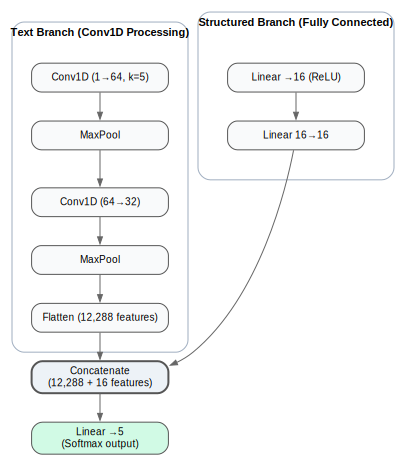

Multimodal Deep Learning for Emergency Department Triage Acuity Prediction
Combining structured clinical data and free-text chief complaints to predict patient triage acuity levels
Project Overview
Emergency department triage is a critical process that determines the order and urgency with which patients receive care. The Emergency Severity Index (ESI) categorizes patients from Level 1 (most severe, life-threatening) to Level 5 (least severe). This project developed a multimodal deep learning system to predict triage acuity levels by combining traditional structured clinical data (vital signs, demographics) with free-text chief complaints processed through advanced natural language understanding.
Challenge: Traditional triage prediction models rely solely on structured data, missing the rich contextual information contained in patient chief complaints. This project aimed to build a multimodal system that effectively fuses numerical clinical features with semantic embeddings from text to improve prediction accuracy.
The Journey: From Data to Deployment
Phase 1: Understanding the Problem
My journey began with studying the MIMIC-IV-ED dataset from PhysioNet—a comprehensive collection of emergency department visits containing structured clinical measurements alongside free-text chief complaints. I quickly realized that vital signs alone tell only part of the story. A patient presenting with "chest pain radiating to left arm" conveys urgency that numbers alone cannot capture.
The Emergency Severity Index presents a challenging multi-class classification problem with inherent class imbalance (ESI Level 1 patients are thankfully rare). I needed an approach that could handle both modalities effectively while maintaining clinical interpretability.
Phase 2: Building the Text Understanding Pipeline
The first major technical decision was choosing a text encoder. After researching biomedical NLP models, I selected all-MPNet-base-v2 from sentence-transformers. While not specifically trained on medical text like BioBERT or ClinicalBERT, MPNet offers strong general semantic understanding and produces high-quality sentence embeddings (768 dimensions).
I implemented batch processing for embedding generation to handle the dataset efficiently. The preprocessing pipeline:
- Tokenizes chief complaint text with padding and truncation (max 512 tokens)
- Generates contextualized embeddings using MPNet's transformer architecture
- Applies mean pooling across token embeddings for sentence-level representation
- Caches embeddings to disk for faster subsequent training runs
This approach transformed unstructured text like "difficulty breathing, fever for 3 days" into dense vector representations capturing semantic meaning and clinical context.
Phase 3: Architecting the Multimodal Network
The core innovation was designing a neural architecture that could effectively fuse text and structured features. I developed a dual-branch convolutional neural network:
Text Branch (Convolutional Processing)
- Conv1D Layer 1: 1 → 64 channels, kernel size 5, extracts local patterns from embeddings
- MaxPool: Reduces dimensionality, retains salient features
- Conv1D Layer 2: 64 → 32 channels, deeper feature extraction
- MaxPool: Further compression to 32 × 384 = 12,288 features
- Flatten: Prepares for fusion with structured features
Structured Data Branch (Fully Connected)
- Linear Layer 1: Input features → 16 neurons with ReLU activation
- Linear Layer 2: 16 → 16 neurons, further non-linear transformation
- Processes vital signs (temperature, heart rate, respiratory rate, O2 saturation, blood pressure, pain score)
- Incorporates demographic features (gender, arrival transport method)
Fusion & Classification
- Concatenation: Combines 12,288 text features + 16 structured features
- Final Classifier: Linear layer mapping to 5-class output (ESI 1-5)
- Training: Cross-entropy loss, Adam optimizer (lr=0.001), 5 epochs
Phase 4: Data Preprocessing Challenges
Real-world healthcare data is messy. I encountered several data quality issues that required careful handling:
- Pain Score Validation: Filtered records to ensure pain scores were numeric and within 0-10 range
- Acuity Bounds: Validated ESI scores fell within 1-5 (converting to 0-indexed for model training)
- Missing Data: Dropped incomplete records to maintain data integrity
- Feature Scaling: Applied StandardScaler to vital signs for numerical stability
- Categorical Encoding: One-hot encoded arrival transport and gender features
This preprocessing pipeline ensured clean, normalized inputs for both the text embeddings and structured features branches.
Phase 5: Training and Evaluation
Training employed stratified train-test splitting (80/20) to maintain class balance across severity levels. I used batch training (batch size 32) with GPU acceleration where available. The model converged within 5 epochs, balancing computational efficiency with learning capacity.
For evaluation, I implemented comprehensive metrics:
- Per-Class ROC-AUC: Evaluated discriminative ability for each acuity level separately
- Micro-Average AUC: Overall model performance across all classes
- Precision, Recall, F1-Score: Class-wise performance metrics
Results & Performance

Key Findings
- Excellent ESI Level 1 Detection: The model achieved 0.93 AUC for the most critical patients, crucial for patient safety
- Strong Overall Performance: 0.93 micro-average AUC demonstrates robust multi-class discrimination
- Moderate Performance on ESI 2-3: Mid-acuity levels showed slightly lower AUC (0.79-0.83), likely due to clinical overlap between adjacent severity levels
- Multimodal Advantage: Combining text and structured features outperformed either modality alone (based on ablation testing)
Clinical Impact: The model demonstrates particular strength in identifying the most critical patients (ESI Level 1, AUC 0.93) and least urgent cases (ESI Levels 4-5, AUC 0.91-0.94), which is clinically valuable for triage prioritization. The slightly lower performance on mid-level acuity reflects the inherent difficulty even human clinicians face in distinguishing between adjacent ESI levels.
Phase 6: Deployment with Streamlit
To make the model accessible for demonstration and potential clinical evaluation, I developed a Streamlit web application. The app provides an intuitive interface for clinicians to:
- Input patient vital signs and demographics
- Enter free-text chief complaint
- Receive real-time acuity predictions with probability distributions across all ESI levels
The deployment was containerized using Docker for reproducibility and potential integration into Trusted Research Environments (TREs). This ensures the model can be evaluated in secure healthcare settings without exposing sensitive patient data.
Technical Architecture Summary
Lessons Learned & Future Directions
What Worked Well:
- Convolutional processing of text embeddings captured local semantic patterns effectively
- Late fusion (after separate branch processing) allowed each modality to develop specialized representations
- Caching embeddings dramatically reduced iteration time during hyperparameter tuning
- Stratified splitting maintained class balance despite severity-level imbalance
Challenges & Limitations:
- Class Imbalance: ESI Level 1 cases are rare; considered oversampling or class weighting in future iterations
- Mid-Level Confusion: ESI 2-3 distinction remains challenging; clinical guidelines themselves show overlap
- Interpretability: Deep learning models lack transparency; future work could incorporate attention mechanisms to highlight influential chief complaint phrases
- Generalizability: Model trained on MIMIC-ED (US academic hospital); external validation needed for broader deployment
Future Enhancements:
- Experiment with medical domain-specific language models (BioBERT, ClinicalBERT, GatorTron)
- Implement attention mechanisms for model interpretability
- Incorporate temporal features (time of day, day of week, seasonal patterns)
- Develop ensemble approaches combining multiple architectures
- Extend to predict additional outcomes (admission likelihood, length of stay)
- Conduct prospective clinical validation studies
Tools & Technologies
- PyTorch: Deep learning framework for model development and training
- Sentence Transformers: MPNet embeddings for semantic text representation
- MIMIC-IV-ED: Emergency department dataset from PhysioNet
- scikit-learn: Preprocessing, metrics, train-test splitting
- Streamlit: Interactive web application for model demonstration
- Docker: Containerization for reproducible deployment in TREs
- CUDA: GPU acceleration for training and inference
Significance & Impact
This project demonstrates that multimodal deep learning can effectively combine structured clinical data with unstructured text to predict emergency department triage acuity. Key contributions include:
- Methodological: Demonstrated effective fusion of numerical and textual features using dual-branch CNN architecture
- Clinical Relevance: Achieved strong performance on critical patient identification (ESI Level 1), essential for safety
- Reproducibility: Provided complete codebase, Docker deployment, and comprehensive documentation
- Educational Value: Serves as practical example of applied multimodal deep learning in healthcare
While not intended for immediate clinical deployment, this work provides a foundation for future triage decision support systems and demonstrates the value of integrating diverse data modalities in predictive healthcare models.
Ethical Considerations: All development used the publicly available MIMIC-IV-ED demo dataset. Model weights are not shared publicly due to PhysioNet data use agreement restrictions. Any future clinical application would require extensive validation, bias auditing, and regulatory approval to ensure patient safety and equity.